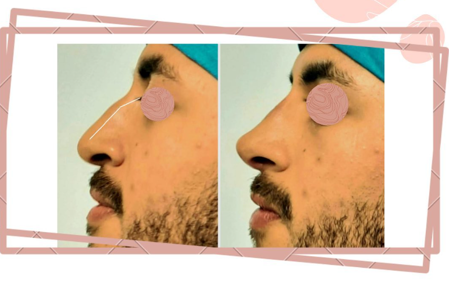
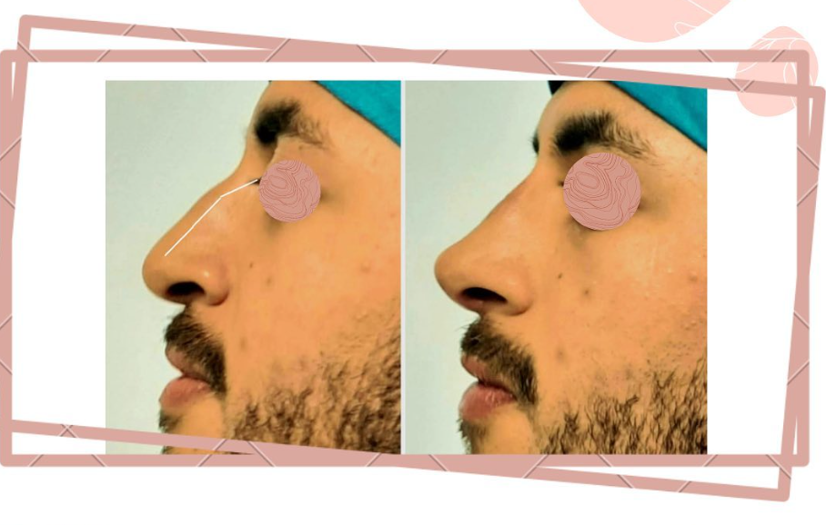

¿Qué es la Rinomodelación?
La rinomodelación es un procedimiento estético no quirúrgico que utiliza ácido hialurónico para corregir imperfecciones de la nariz. Es una alternativa segura, rápida y sin necesidad de cirugía para mejorar la armonía facial y embellecer el perfil nasal.
Beneficios del Tratamiento
- ✓ Sin cirugía ni anestesia general
- ✓ Resultados inmediatos
- ✓ Procedimiento ambulatorio
- ✓ Recuperación rápida (sin hospitalización)
- ✓ Corrige gibas nasales (joroba)
- ✓ Levanta la punta de la nariz
- ✓ Afina el puente nasal
- ✓ Mejora la simetría facial
- ✓ Resultados naturales y armónicos
- ✓ Reversible con hialuronidasa
¿Cómo funciona?
Evaluación Personalizada
Analizamos la estructura de tu nariz y rostro para determinar el mejor tratamiento.
Preparación y Anestesia
Limpiamos el área y aplicamos anestesia tópica para mayor comodidad.
Aplicación Estratégica
Inyectamos ácido hialurónico en puntos específicos para corregir imperfecciones.
Modelado Final
Moldeamos suavemente el ácido para lograr el contorno deseado.
Resultado Inmediato
Puedes ver los resultados al instante y regresar a tus actividades.
¿Qué Imperfecciones Corrige?
Detalles del Servicio
Recomendaciones
Antes del procedimiento:
- No consumir aspirinas o antiinflamatorios 7 días antes
- Evitar alcohol 48 horas antes
- Informar sobre alergias o tratamientos previos
- No maquillarse el día del procedimiento
Después del procedimiento:
- No tocar ni masajear la nariz por 48 horas
- Evitar ejercicio intenso por 24 horas
- No usar lentes pesados por 2 semanas
- Dormir boca arriba con cabeza elevada
- Evitar exposición solar directa
- No realizar tratamientos faciales por 2 semanas
- Aplicar hielo si hay inflamación (sin presión)
Preguntas Frecuentes
¿Es doloroso?
El procedimiento es poco doloroso gracias a la anestesia tópica. Puedes sentir una leve presión durante la aplicación.
¿Cuánto dura el efecto?
Los resultados duran entre 12 y 18 meses, dependiendo del tipo de ácido hialurónico y del metabolismo de cada persona.
¿Es reversible?
Sí, completamente. Si no estás satisfecho con el resultado, se puede aplicar hialuronidasa para disolver el ácido hialurónico.
¿Cuándo veré los resultados?
Los resultados son inmediatos, aunque puede haber una ligera inflamación los primeros días que se resolverá naturalmente.